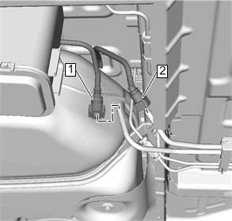
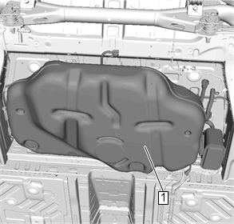

燃油箱的更换
拆卸程序
警告：
有关汽油/汽油蒸汽的警告
警告：
有关安全眼镜的警告
1.
打开发动机舱盖。
2.
断开蓄电池负极电缆。
蓄电池负极电缆的断开和连接
3.
举升并顶起车辆。
举升和顶起车辆
4.
燃油箱加注管»拆下－
燃油箱加注管的更换
5.
排气消音器»拆下－
排气消音器的更换
6.
断开燃油箱线束连接器 。

7.
蒸发排放管（1）@燃油箱供油管(2)»拆下－
塑料挡圈快速接头的维修
8.
燃油箱箍带»拆下－
燃油箱箍带的更换
9.
燃油箱护罩»拆下－
燃油箱护罩的更换

警告：
为了避免人身伤害，在仅用千斤顶支撑的车辆中或车辆下方工作时，务必使用千斤顶座。
告诫：
在车架纵梁或者其他指定的举升点提升或举升车辆时，确保千斤顶垫块未碰到催化转化器、制动管或者燃油管。如果碰到上述部位，可能会导致车辆损坏或性能下降。
10.
将一个适当的可调千斤顶放到燃油箱下。
注意:
需要另一个技师。
注意:
缩回千斤顶。
11.
油箱 (1)»拆下
12.
必要时，拆下所需的零件。
安装程序
注意:
需要另一个技师。
注意:
伸展千斤顶。
1.
油箱 (1)»安装
2.
燃油箱护罩»安装—
燃油箱护罩的更换
3.
燃油箱箍带»安装—
燃油箱箍带的更换
4.
蒸发排放管（1）@燃油箱供油管(2)»安装—
塑料挡圈快速接头的维修
5.
安装燃油箱线束连接器 。
6.
排气消音器»安装—
排气消音器的更换
7.
燃油箱加注管»安装—
燃油箱加注管的更换
8.
降下车辆。
9.
连接蓄电池负极电缆。
蓄电池负极电缆的断开和连接
10.
关闭发动机舱盖。